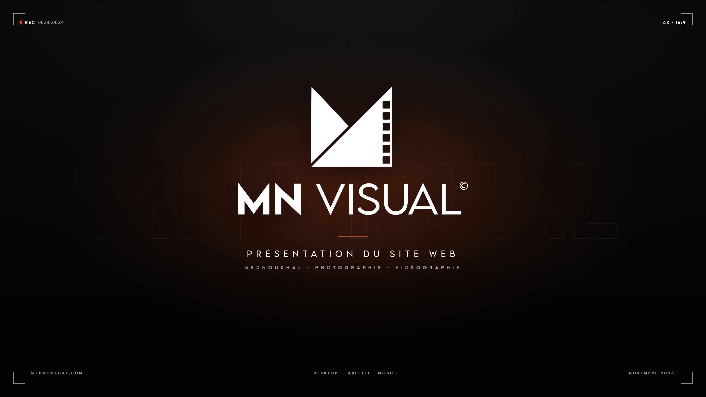
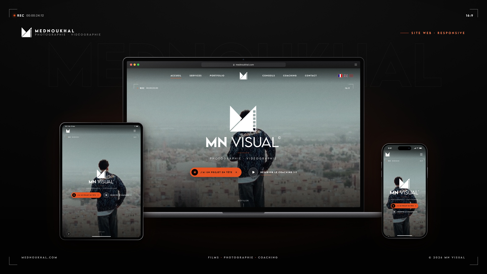
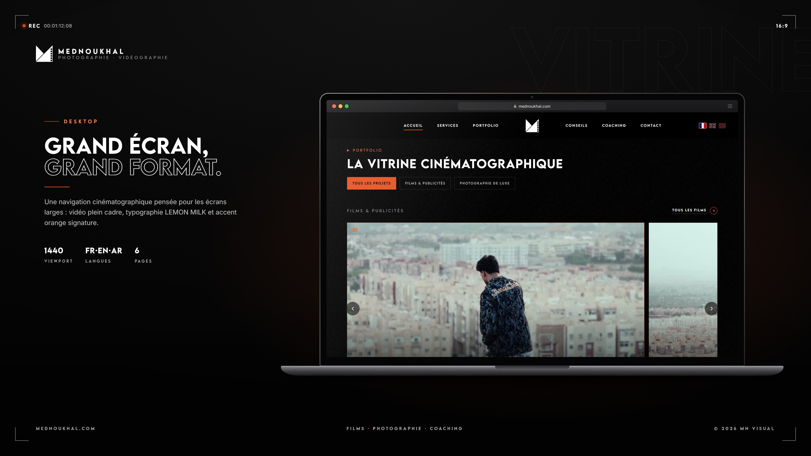
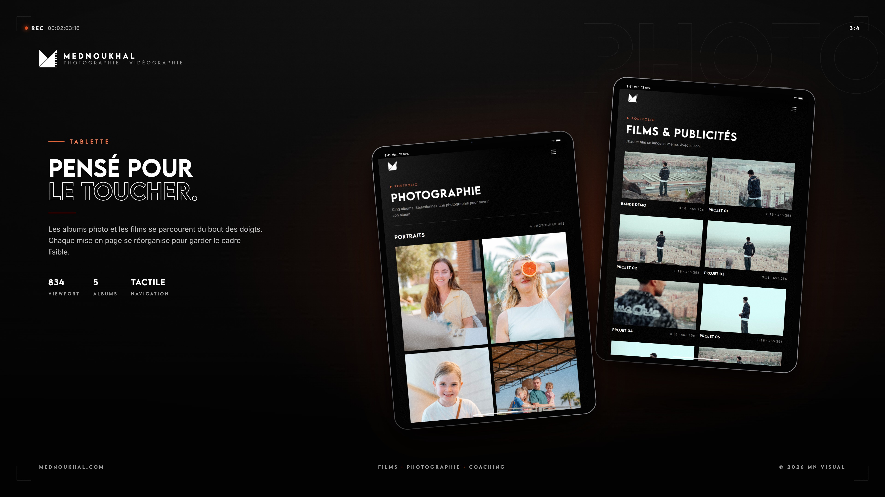
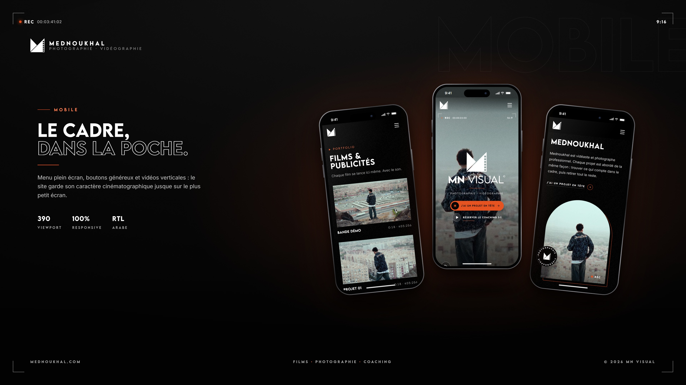
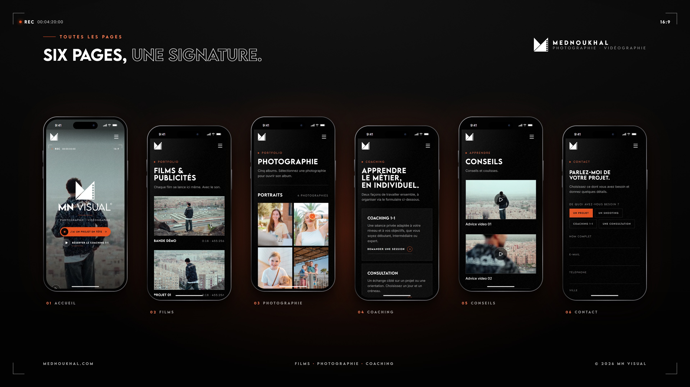
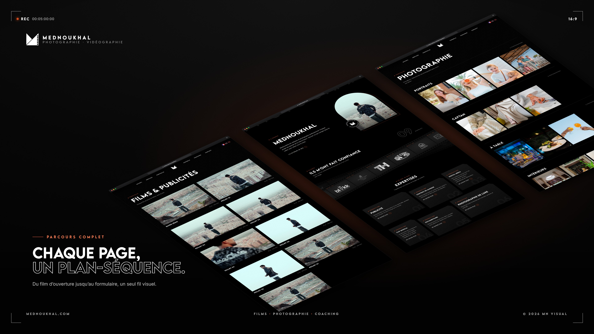
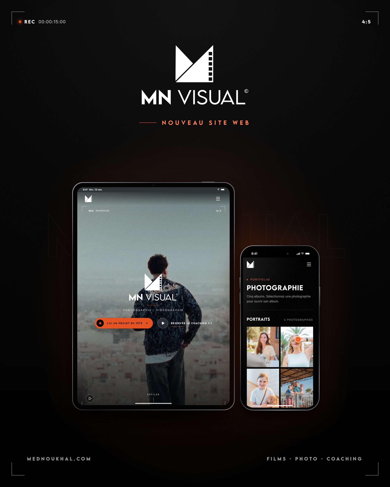

Captures réelles du site sur desktop, tablette et mobile, mises en scène dans l’univers MN Visual. Cliquez sur une image pour l’ouvrir en 4K (PNG). Versions JPG légères dans le dossier jpg/.







